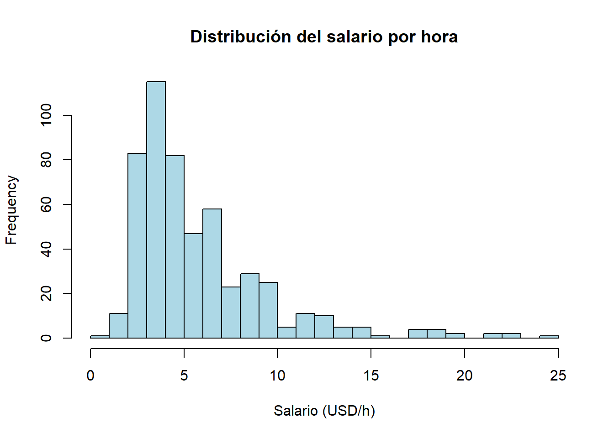
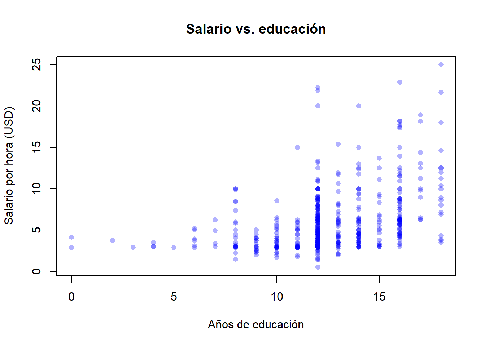

Code
install.packages(c("wooldridge", "readxl", "lmtest", "sandwich", "orcutt"))Este apéndice recoge, en formato de referencia rápida, las herramientas matemáticas y estadísticas que el libro asume conocidas. No pretende sustituir un curso de cálculo, probabilidad o álgebra lineal; el objetivo es fijar la notación —la de Wooldridge (2020)— y recordar las propiedades que se usan a lo largo del texto: el logaritmo en las elasticidades del Capítulo 6, las condiciones de primer orden en la derivación de MCO del Capítulo 2, las propiedades de la varianza y la covarianza en la fórmula del estimador, la distribución muestral del Capítulo 4 y la forma matricial del Capítulo 3.
Se incluye también un bloque práctico sobre R y RStudio: cómo instalar el software, cargar los paquetes que usaremos y dar los primeros pasos con un conjunto de datos reales.
wooldridge y producir los primeros descriptivos y gráficos.Una función \(f\) asigna a cada valor \(x\) del dominio un único valor \(y = f(x)\). En el libro trabajaremos sobre todo con tres familias:
Recordamos las reglas básicas de los exponentes. Para todo \(a > 0\) y cualesquiera reales \(m, n\):
\[ a^m \cdot a^n = a^{m+n}, \qquad \frac{a^m}{a^n} = a^{m-n}, \qquad (a^m)^n = a^{mn}, \qquad a^0 = 1, \qquad a^{-n} = \frac{1}{a^n}. \]
(Las mismas identidades valen para cualquier real \(a \neq 0\) cuando \(m, n\) son enteros; la restricción \(a > 0\) pasa a ser importante en cuanto admitimos exponentes fraccionarios —por ejemplo, la raíz cuadrada \(\sqrt{a} = a^{1/2}\) solo está definida para \(a \geq 0\).)
El logaritmo natural \(\ln(x) = \log_e(x)\) es la inversa de la función exponencial \(e^x\):
\[ \ln(e^x) = x, \qquad e^{\ln(x)} = x \quad (x > 0). \]
Las cuatro propiedades que usaremos sistemáticamente —sobre todo en el Capítulo 6, al interpretar modelos log-lineales como elasticidades— son:
\[ \ln(xy) = \ln(x) + \ln(y), \qquad \ln\!\left(\frac{x}{y}\right) = \ln(x) - \ln(y), \]
\[ \ln(x^a) = a\,\ln(x), \qquad \ln(1) = 0. \]
Para variaciones pequeñas, \(\ln(x_1) - \ln(x_0) \approx (x_1 - x_0)/x_0\). Es decir: la diferencia de logaritmos aproxima la tasa de crecimiento. Por eso, en un modelo del tipo \(\ln(\text{salario}) = \beta_0 + \beta_1\,\text{educ} + u\), el coeficiente \(\beta_1\) se interpreta como el cambio proporcional en el salario asociado a un año adicional de educación (un retorno aproximado a la educación). Volveremos sobre esto con detalle en el Capítulo 6.
\(\ln(x + y) \neq \ln(x) + \ln(y)\). La regla del logaritmo del producto vale para \(\ln(xy)\), no para \(\ln(x+y)\). Confundirlas es uno de los errores algebraicos más habituales al manipular modelos log-lineales.
El símbolo de sumatorio \(\sum\) es una notación abreviada de la que no podemos prescindir:
\[ \sum_{i=1}^{n} x_i = x_1 + x_2 + \cdots + x_n. \]
Dos propiedades que se usan constantemente:
\[ \sum_{i=1}^{n} (a x_i + b y_i) = a \sum_{i=1}^{n} x_i + b \sum_{i=1}^{n} y_i,\qquad \sum_{i=1}^{n} c = n\,c. \]
La media muestral es \(\bar x = \tfrac{1}{n}\sum_{i=1}^{n} x_i\), y una propiedad que utilizaremos en la derivación de MCO es \(\sum_{i=1}^{n} (x_i - \bar x) = 0\).
La derivada \(f'(x) = \dfrac{df}{dx}\) mide la pendiente de \(f\) en el punto \(x\). Las reglas que necesitaremos son:
| Función | Derivada |
|---|---|
| \(f(x) = c\) (constante) | \(f'(x) = 0\) |
| \(f(x) = x^n\) | \(f'(x) = n\,x^{n-1}\) |
| \(f(x) = e^x\) | \(f'(x) = e^x\) |
| \(f(x) = \ln(x)\) | \(f'(x) = 1/x\) |
| \(f(x) = a\,g(x) + b\,h(x)\) | \(f'(x) = a\,g'(x) + b\,h'(x)\) |
| \(f(x) = g(x)\,h(x)\) | \(f'(x) = g'(x)\,h(x) + g(x)\,h'(x)\) |
| \(f(x) = g(h(x))\) (regla de la cadena) | \(f'(x) = g'(h(x))\,h'(x)\) |
Cuando \(f\) depende de varias variables, \(f(x_1, x_2, \ldots, x_k)\), la derivada parcial respecto de \(x_j\) se obtiene tratando las demás variables como constantes:
\[ \frac{\partial f}{\partial x_j}. \]
En el Capítulo 3 (regresión múltiple), el coeficiente \(\beta_j\) del modelo \(y = \beta_0 + \beta_1 x_1 + \cdots + \beta_k x_k + u\) se interpreta como:
\[ \beta_j = \frac{\partial \mathbb{E}[y \mid x_1, \ldots, x_k]}{\partial x_j}, \]
es decir, el cambio esperado en \(y\) ante un aumento unitario de \(x_j\) manteniendo constantes las demás regresoras (interpretación ceteris paribus).
Si \(f\) es suave y alcanza un máximo o mínimo interior en \(x^\ast\), entonces
\[ f'(x^\ast) = 0. \]
Esta es la condición de primer orden (CPO). Para verificar que se trata de un mínimo, una condición suficiente es \(f''(x^\ast) > 0\); la condición necesaria de segundo orden es la más débil \(f''(x^\ast) \geq 0\). La distinción importa porque casos como \(f(x) = x^4\) tienen un mínimo en \(x = 0\) con \(f''(0) = 0\).
En el caso multivariante, la CPO de \(f(x_1, \ldots, x_k)\) es
\[ \frac{\partial f}{\partial x_j} = 0 \quad \text{para } j = 1, 2, \ldots, k. \]
Este es el aparato que utilizaremos en §2.4 para derivar el estimador de Mínimos Cuadrados Ordinarios (MCO): la suma de cuadrados de los residuos \(\text{SCR}(\beta_0, \beta_1) = \sum_i (y_i - \beta_0 - \beta_1 x_i)^2\) se minimiza imponiendo \(\partial \text{SCR}/\partial \beta_0 = 0\) y \(\partial \text{SCR}/\partial \beta_1 = 0\).
Sea \(f(x) = (x - 3)^2 + 5\). Su derivada es \(f'(x) = 2(x - 3)\). Imponiendo \(f'(x) = 0\) se obtiene \(x^\ast = 3\). Como \(f''(x) = 2 > 0\), es un mínimo. El valor mínimo de la función es \(f(3) = 5\). La misma lógica, aplicada a una suma de cuadrados con dos parámetros, conduce a las fórmulas de MCO.
Una variable aleatoria \(X\) es una función que asigna un número real a cada resultado de un experimento aleatorio. Distinguimos dos tipos:
La esperanza de \(X\) —su valor medio poblacional— se denota:
\[ \mathbb{E}[X] = \mu. \]
Las propiedades fundamentales son:
\[ \mathbb{E}[c] = c, \qquad \mathbb{E}[aX + b] = a\,\mathbb{E}[X] + b, \]
\[ \mathbb{E}[aX_1 + bX_2] = a\,\mathbb{E}[X_1] + b\,\mathbb{E}[X_2], \]
\[ \mathbb{E}\!\left[\sum_{i=1}^{N} a_i X_i\right] = \sum_{i=1}^{N} a_i\,\mathbb{E}[X_i]. \]
Esta última propiedad —la linealidad de la esperanza— vale siempre, con independencia de que las \(X_i\) estén correlacionadas o no.
La varianza mide la dispersión de \(X\) en torno a su media:
\[ \operatorname{Var}(X) = \sigma^2 = \mathbb{E}\!\left[(X - \mathbb{E}[X])^2\right] = \mathbb{E}\!\left[(X - \mu)^2\right]. \]
Equivalentemente, usando la fórmula computacional:
\[ \operatorname{Var}(X) = \mathbb{E}[X^2] - \mathbb{E}[X]^2. \]
Propiedades:
\[ \operatorname{Var}(c) = 0, \qquad \operatorname{Var}(aX) = a^2\,\operatorname{Var}(X), \qquad \operatorname{Var}(aX + b) = a^2\,\operatorname{Var}(X). \]
La desviación típica \(\sigma = \sqrt{\operatorname{Var}(X)}\) se expresa en las mismas unidades que \(X\).
La covarianza mide la asociación lineal entre dos variables:
\[ \operatorname{Cov}(X, Y) = \mathbb{E}\!\left[(X - \mathbb{E}[X])(Y - \mathbb{E}[Y])\right] = \mathbb{E}[XY] - \mathbb{E}[X]\,\mathbb{E}[Y]. \]
Si \(\mathbb{E}[X] = 0\) o \(\mathbb{E}[Y] = 0\), la fórmula se simplifica a \(\operatorname{Cov}(X, Y) = \mathbb{E}[XY]\).
Propiedades:
\[ \operatorname{Cov}(aX, bY) = ab\,\operatorname{Cov}(X, Y), \qquad \operatorname{Cov}(X, X) = \operatorname{Var}(X). \]
Si \(X\) e \(Y\) son independientes, entonces \(\operatorname{Cov}(X, Y) = 0\). El recíproco no es cierto en general: covarianza nula solo descarta asociación lineal.
La correlación es la covarianza normalizada y vive en \([-1, 1]\):
\[ \operatorname{Corr}(X, Y) = \frac{\operatorname{Cov}(X, Y)}{\sqrt{\operatorname{Var}(X)\,\operatorname{Var}(Y)}} = \frac{\operatorname{Cov}(X, Y)}{\sigma_X\,\sigma_Y}. \]
Combinando varianza y covarianza:
\[ \operatorname{Var}(aX + bY) = a^2\,\operatorname{Var}(X) + b^2\,\operatorname{Var}(Y) + 2ab\,\operatorname{Cov}(X, Y). \]
Si \(\operatorname{Cov}(X, Y) = 0\) —en particular, si \(X\) e \(Y\) son independientes—:
\[ \operatorname{Var}(X + Y) = \operatorname{Var}(X) + \operatorname{Var}(Y). \]
La fórmula \(\operatorname{Var}(X + Y) = \operatorname{Var}(X) + \operatorname{Var}(Y)\) solo vale cuando la covarianza entre \(X\) e \(Y\) es cero. Cuando hay correlación, hay que añadir el término cruzado \(2\,\operatorname{Cov}(X, Y)\). Olvidarlo es uno de los errores más habituales al calcular varianzas de estimadores.
La esperanza condicional \(\mathbb{E}[Y \mid X]\) es la media de \(Y\) dado un valor de \(X\). Es una función de \(X\) y juega un papel central en econometría: el modelo de regresión es, en esencia, una forma funcional para \(\mathbb{E}[Y \mid X]\).
Propiedades:
\[ \mathbb{E}[X \mid X] = X, \qquad \mathbb{E}\!\left[a\,g(X)\,Y + b\,h(X) \mid X\right] = a\,g(X)\,\mathbb{E}[Y \mid X] + b\,h(X). \]
Si \(X\) e \(Y\) son independientes, \(\mathbb{E}[Y \mid X] = \mathbb{E}[Y]\).
La ley de las esperanzas iteradas (o esperanza anidada) afirma que:
\[ \mathbb{E}\!\left[\mathbb{E}[Y \mid X]\right] = \mathbb{E}[Y]. \]
Es decir, la media de las medias condicionales es la media incondicional. Es la herramienta clave para mostrar, en el Capítulo 3, que bajo el supuesto de exogeneidad estricta \(\mathbb{E}[u \mid x_1, \ldots, x_k] = 0\), el estimador MCO es insesgado.
Dada una muestra aleatoria \(\{Y_1, Y_2, \ldots, Y_n\}\) de una población, un estimador \(\hat{\theta}\) es una función de los datos que aproxima un parámetro poblacional \(\theta\). La distribución muestral de \(\hat{\theta}\) —la distribución que se obtendría repitiendo el muestreo infinitas veces— describe su comportamiento. Dos rasgos de esa distribución determinan la calidad del estimador:
Si \(\{Y_1, \ldots, Y_n\}\) es una muestra i.i.d. con media \(\mu\) y varianza \(\sigma^2 < \infty\), la media muestral \(\bar{Y} = \tfrac{1}{n}\sum_i Y_i\) cumple, para \(n\) grande:
\[ \frac{\bar{Y} - \mu}{\sigma / \sqrt{n}} \ \overset{a}{\sim}\ N(0, 1). \]
Este es el teorema central del límite (TCL). Es la razón por la que la distribución normal aparece de forma sistemática en inferencia: aunque la población no sea normal, las medias y los estimadores MCO basados en sumas se aproximan a una normal cuando la muestra es suficientemente grande.
Tres distribuciones aparecen una y otra vez en los Capítulos 4 y 5:
En los contrastes del libro, los valores críticos —los percentiles 0,95 o 0,99 de estas distribuciones— se leen de una tabla o se calculan en R con qt(), qf() y qchisq(). La regla práctica: la \(t\) aparece en contrastes sobre un solo coeficiente (§4.3); la \(F\), en contrastes de restricciones múltiples (§4.4).
El \(p\)-valor de un contraste es la probabilidad, bajo la hipótesis nula, de observar un estadístico de contraste al menos tan extremo como el obtenido. Un \(p\)-valor pequeño constituye evidencia en contra de la nula. Los umbrales convencionales son 1%, 5% y 10%, pero lo que conviene reportar es el propio \(p\)-valor —no solo “rechazada” o “no rechazada”.
Un intervalo de confianza al \((1 - \alpha)\) para un parámetro \(\theta\) es un intervalo aleatorio que, en muestras repetidas, contiene al verdadero \(\theta\) con probabilidad \(1 - \alpha\). Para un estimador \(\hat\theta\) con distribución muestral aproximadamente normal y error estándar \(\mathrm{ee}(\hat\theta)\), el intervalo estándar al 95% es \(\hat\theta \pm 1{,}96 \cdot \mathrm{ee}(\hat\theta)\). El Capítulo 4 construye intervalos de confianza para los coeficientes individuales de MCO exactamente con esta forma.
El libro recurre a la forma matricial de MCO de forma sistemática a partir de §3.4. Aquí fijamos lo imprescindible.
Un vector columna de dimensión \(n\) se escribe
\[ \mathbf{y} = \begin{pmatrix} y_1 \\ y_2 \\ \vdots \\ y_n \end{pmatrix}. \]
Una matriz \(A\) de dimensión \(n \times k\) tiene \(n\) filas y \(k\) columnas; sus elementos se denotan \(a_{ij}\), con \(i\) índice de fila y \(j\) índice de columna.
La traspuesta \(A'\) (también escrita \(A'\)) intercambia filas y columnas: si \(A\) es \(n \times k\), \(A'\) es \(k \times n\) y \((A')_{ij} = a_{ji}\). Propiedades:
\[ (A')' = A, \qquad (A + B)' = A' + B', \qquad (AB)' = B'\,A'. \]
Una matriz es simétrica si \(A = A'\).
Una matriz cuadrada \(A\) de dimensión \(k \times k\) es invertible (o no singular) si existe \(A^{-1}\) tal que \(A\,A^{-1} = A^{-1}\,A = I_k\), donde \(I_k\) es la matriz identidad de tamaño \(k\). Propiedades:
\[ (A^{-1})^{-1} = A, \qquad (AB)^{-1} = B^{-1}\,A^{-1}, \qquad (A^{-1})' = (A')^{-1}. \]
El rango de una matriz \(A\) es el número de columnas (o filas) linealmente independientes. Una matriz cuadrada \(k \times k\) es invertible si y solo si tiene rango \(k\) (rango pleno).
En el Capítulo 3, el estimador MCO en forma matricial es
\[ \hat{\beta} = (X'X)^{-1}\,X'\,\mathbf{y}, \]
donde \(X\) es la matriz \(n \times k\) de regresoras (con una columna de unos para el intercepto). El supuesto de rango pleno —que las columnas de \(X\) sean linealmente independientes— es lo que garantiza que \(X'X\) sea invertible. Su violación es justamente la multicolinealidad perfecta del Capítulo 3.
Todo el libro emplea R —y, como interfaz gráfica, RStudio— para la práctica. Ambos son gratuitos y multiplataforma.
install.packages(c("wooldridge", "readxl", "lmtest", "sandwich", "orcutt"))La instalación se realiza una sola vez por equipo. En cada sesión nueva, los paquetes se cargan con library().
library(wooldridge)
data("wage1")Estos paquetes cubren, respectivamente: los conjuntos de datos del libro de Wooldridge (wooldridge), la lectura de archivos Excel (readxl), contrastes de hipótesis sobre coeficientes (lmtest), errores estándar robustos a heterocedasticidad (sandwich) y la corrección de Cochrane–Orcutt para autocorrelación (orcutt).
Para leer un archivo .xlsx propio (por ejemplo, los datos de la Práctica 0):
library(readxl)
datos_notas <- read_excel("ruta/al/archivo/datos_notas.xlsx")Hay que usar barras inclinadas / en la ruta —incluso en Windows— o duplicar las barras invertidas (\\).
Tres funciones bastan para una primera exploración:
str(wage1)'data.frame': 526 obs. of 24 variables:
$ wage : num 3.1 3.24 3 6 5.3 ...
$ educ : int 11 12 11 8 12 16 18 12 12 17 ...
$ exper : int 2 22 2 44 7 9 15 5 26 22 ...
$ tenure : int 0 2 0 28 2 8 7 3 4 21 ...
$ nonwhite: int 0 0 0 0 0 0 0 0 0 0 ...
$ female : int 1 1 0 0 0 0 0 1 1 0 ...
$ married : int 0 1 0 1 1 1 0 0 0 1 ...
$ numdep : int 2 3 2 0 1 0 0 0 2 0 ...
$ smsa : int 1 1 0 1 0 1 1 1 1 1 ...
$ northcen: int 0 0 0 0 0 0 0 0 0 0 ...
$ south : int 0 0 0 0 0 0 0 0 0 0 ...
$ west : int 1 1 1 1 1 1 1 1 1 1 ...
$ construc: int 0 0 0 0 0 0 0 0 0 0 ...
$ ndurman : int 0 0 0 0 0 0 0 0 0 0 ...
$ trcommpu: int 0 0 0 0 0 0 0 0 0 0 ...
$ trade : int 0 0 1 0 0 0 1 0 1 0 ...
$ services: int 0 1 0 0 0 0 0 0 0 0 ...
$ profserv: int 0 0 0 0 0 1 0 0 0 0 ...
$ profocc : int 0 0 0 0 0 1 1 1 1 1 ...
$ clerocc : int 0 0 0 1 0 0 0 0 0 0 ...
$ servocc : int 0 1 0 0 0 0 0 0 0 0 ...
$ lwage : num 1.13 1.18 1.1 1.79 1.67 ...
$ expersq : int 4 484 4 1936 49 81 225 25 676 484 ...
$ tenursq : int 0 4 0 784 4 64 49 9 16 441 ...
- attr(*, "time.stamp")= chr "25 Jun 2011 23:03"str() describe la estructura: tipo de cada variable, número de observaciones y de columnas. Útil para confirmar que las variables numéricas no se han leído como texto.
summary(wage1[, c("wage", "educ", "exper", "tenure")]) wage educ exper tenure
Min. : 0.530 Min. : 0.00 Min. : 1.00 Min. : 0.000
1st Qu.: 3.330 1st Qu.:12.00 1st Qu.: 5.00 1st Qu.: 0.000
Median : 4.650 Median :12.00 Median :13.50 Median : 2.000
Mean : 5.896 Mean :12.56 Mean :17.02 Mean : 5.105
3rd Qu.: 6.880 3rd Qu.:14.00 3rd Qu.:26.00 3rd Qu.: 7.000
Max. :24.980 Max. :18.00 Max. :51.00 Max. :44.000 summary() devuelve los estadísticos descriptivos —mínimo, máximo, media, mediana y cuartiles— de cada variable.
head(wage1[, c("wage", "educ", "exper", "female", "married")]) wage educ exper female married
1 3.10 11 2 1 0
2 3.24 12 22 1 1
3 3.00 11 2 0 0
4 6.00 8 44 0 1
5 5.30 12 7 0 1
6 8.75 16 9 0 1head() muestra las primeras filas para inspeccionar visualmente los datos.
<- es el operador de asignación: x <- 5 guarda el valor 5 en el objeto x.c() combina valores en un vector: c(1, 2, 3).data.frame es la estructura tabular estándar: una columna por variable, una fila por observación.$ extrae una columna por su nombre: wage1$wage.?nombre_funcion abre la ayuda de nombre_funcion.Más allá de los estadísticos resumen, conviene mirar los datos. R ofrece comandos sencillos para histogramas, diagramas de dispersión y medias condicionales por grupos.
hist(wage1$wage,
breaks = 30, col = "lightblue",
main = "Distribución del salario por hora",
xlab = "Salario (USD/h)")
La distribución es claramente asimétrica a la derecha: hay una cola larga de salarios altos. La media (aprox. 5,90 USD/h) supera a la mediana (4,65 USD/h). Es el patrón habitual en variables de renta.
hist(wage1$educ,
breaks = 18, col = "lightgreen",
main = "Años de educación",
xlab = "Años de educación")
plot(wage1$educ, wage1$wage,
pch = 16, col = rgb(0, 0, 1, 0.3),
xlab = "Años de educación",
ylab = "Salario por hora (USD)",
main = "Salario vs. educación")
La nube sugiere una asociación positiva entre educación y salario. Pero —como se discutió en el Capítulo 1— la correlación bruta no es el efecto causal de la educación: para acercarnos a éste necesitaremos los controles del Capítulo 3.
# Salario medio por género (female = 1 si mujer)
tapply(wage1$wage, wage1$female, mean) 0 1
7.099489 4.587659 # Salario medio por estado civil
tapply(wage1$wage, wage1$married, mean) 0 1
4.843884 6.573469 tapply() calcula una media condicional: la media de \(Y\) por grupos definidos por una variable categórica. Estas medias son útiles para detectar asociaciones brutas, pero no son efectos causales: una brecha salarial bruta entre hombres y mujeres puede reflejar diferencias en ocupación, experiencia, sector y horas trabajadas, además de —o en lugar de— discriminación.
Con R instalado, los paquetes cargados y los descriptivos a la vista, ya se está en condiciones de abordar el primer modelo de regresión del Capítulo 2. La función lm() —el estimador MCO en R— se introduce allí; las propiedades teóricas de los estimadores, en los Capítulos 3 y 4; y los contrastes basados en valores críticos \(t\), en §4.3.